Cavite, Philippines
TAGAYTAY
CITY
Tagaytay is one of the most frequented places in the south because of its outstanding scenery. It overlooks Taal Lake and Taal Volcano and cold climate, given its high altitude. This makes both the volcano and lake viewable from several vantage points. This also explains where it gets its moniker and why tourism is one of its major industries.
YOUR FIRST
DESTINATION
People's Park in the Sky
The People's Park in the Sky, often simply called People's Park and originally named Palace in the Sky,
is a historic urban park in Tagaytay, Cavite, Philippines.
The park was converted from an unfinished mansion, known as the Palace in the Sky, built during the Marcos
regime to host the state visit of then-United States President Ronald Reagan, but discontinued when the latter
canceled his visit. The complex’s conversion came in 1986 after Marcos was deposed and replaced by
Corazon Aquino.[1] The incomplete scaffolding of the mansion remained intact.[1]
The Shrine of Our Lady, Mother of Fair Love and a Doppler weather radar station maintained by the
Philippine Atmospheric, Geophysical and Astronomical Services Administration (PAGASA) are also within the park.[2]
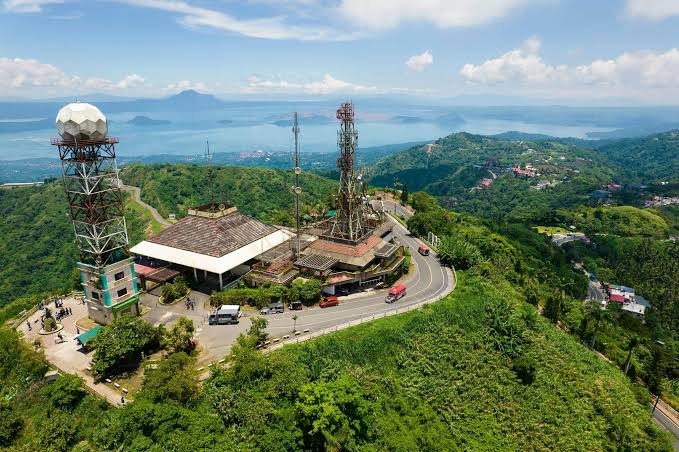
People's Park in the Sky
The people of Tagaytay are known for being friendly, welcoming,
and hardworking. Their warm hospitality makes visitors feel
comfortable while exploring the city, enjoying local food, and
experiencing its beautiful surroundings.
Interactive map of People's Park in the Sky
TYPE: Urban Park
LOCATION: Mount Sungay in Calabuso
North, Tagaytay, Cavite,
Philippines
COORDINATES: 14°8′29″N 121°1′
19″E
STATUS: Open to Public
Tagaytay Picnic Grove
Tagaytay Picnic Grove, also known simply as Picnic Grove, is one of the tourist spots and dining destinations in the
city of Tagaytay, Cavite. It is located along Tagaytay-Calamba Road, west of People's Park in the Sky, northwest of Tagaytay Midlands,
north of Taal Volcano and Mount St. Mary, south of Tagaytay Fruit Market, and east of Tagaytay Rotonda.
Tagaytay Picnic Grove is situated along the Tagaytay Range, which serves as the northern entrance to the
Taal Volcanic Caldera. Because of its elevated and mountainous location, visitors can enjoy
views of Taal Volcano and People's Park in the Sky from the Picnic Grove.
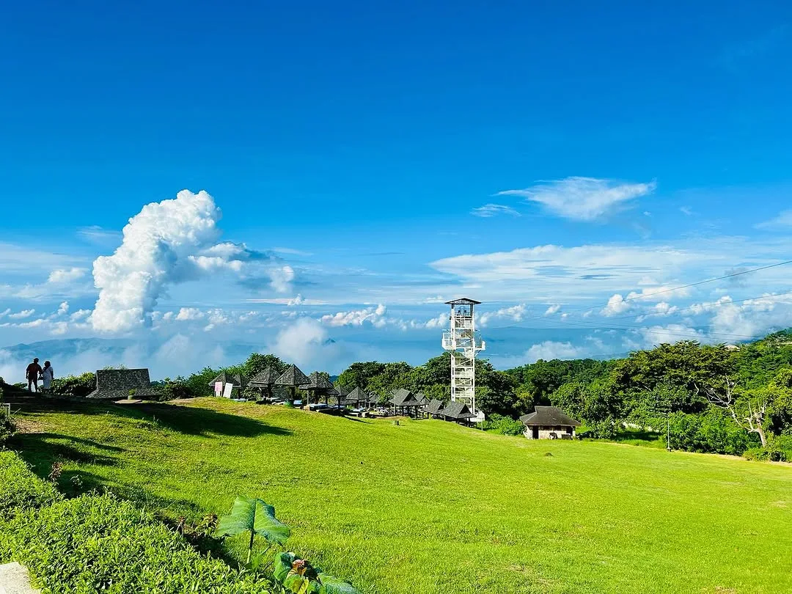
Tagaytay Picnic Grove
Tagaytay Picnic Grove is a popular tourist destination in Tagaytay, Cavite, known for its beautiful scenery and relaxing atmosphere. Located along Tagaytay-Calamba Road, it offers visitors a scenic view of Taal Volcano and Taal Lake. It is a great place for picnics, sightseeing, and spending quality time with family and friends while enjoying the cool weather and natural surroundings.
Interactive map of Tagaytay Picnic Grove
TYPE: Range Park
LOCATION: Sungay South, Tagaytay, Cavite, Pilipinas
STATUS: Open to Public
Sky Ranch Tagaytay
The Sky Ranch Tagaytay is a popular amusement park located along Tagaytay-Nasugbu Highway
in Tagaytay, Cavite. It offers various rides, restaurants, and activities that visitors can enjoy with family and friends.
Sky Ranch Tagaytay opened to the public in March 2013. One of its main attractions is the Sky Eye, a giant Ferris wheel that
stands about 63 meters (207 feet) tall and has 32 gondolas. Visitors can enjoy panoramic views of Tagaytay
while riding the attractions and exploring the park.
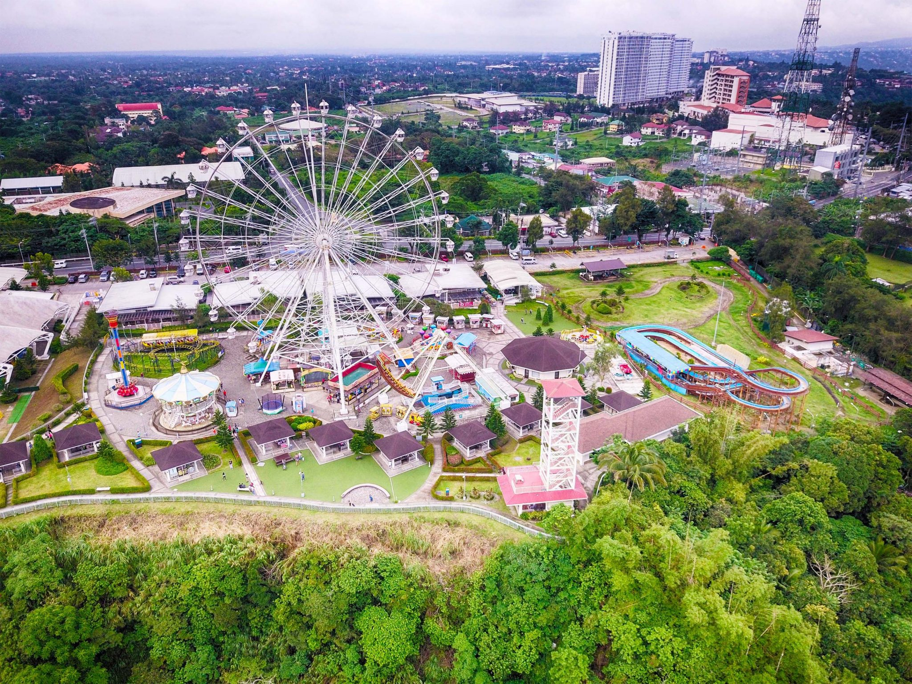
Sky Rarch Tagaytay
**Sky Ranch Tagaytay** is a popular amusement park in Tagaytay, Cavite, known for its exciting rides, fun attractions, and scenic views. It is a great destination for families and friends who want to enjoy thrilling rides, delicious food, and a relaxing day while experiencing the cool atmosphere of Tagaytay.
Interactive map of Sky Ranch Tagaytay
TYPE: Range Park
LOCATION: Kaybagal South, Tagaytay, Cavite, Pilipinas
STATUS: Open to Public
Twin Lake
Twin Lakes is a popular tourist destination in Tagaytay, Cavite, known for its beautiful scenery,
relaxing atmosphere, and European-inspired village. It is a great place to enjoy nature, restaurants,
shops, and scenic views with family and friends.
Located along Tagaytay-Nasugbu Highway, Twin Lakes offers visitors a peaceful getaway
surrounded by
mountains and greenery. It is also known for its scenic views and relaxing
environment, making it
a popular place for sightseeing and leisure.
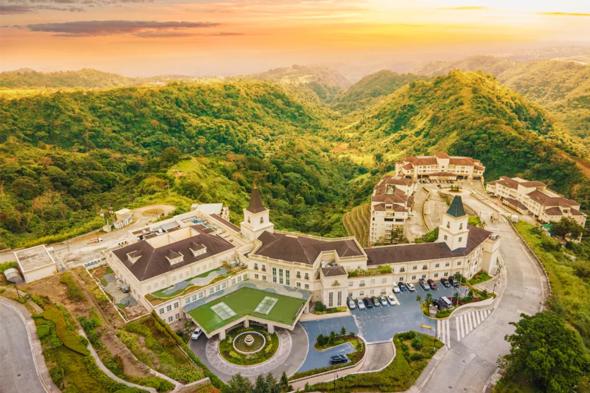
Twin Lake
Twin Lakes is a scenic destination in Tagaytay, Cavite, offering beautiful views,
relaxing surroundings, restaurants, and shops. It is a great place to visit with
family and friends.
Interactive map of Twin Lakes
TYPE: Range Park
LOCATION:
Laurel-Tanay Road,
Tagaytay-Nasugbu
Highway, Tagaytay,
CaviteCavite, Pilipinas
STATUS: Open to Public
Museo Orlina
Museo Orlina is a contemporary art museum in Tagaytay, Cavite, showcasing the works of
renowned Filipino artist Ramon Orlina. The museum features beautiful glass sculptures, artworks,
and exhibitions that visitors can enjoy while exploring the different galleries.
The museum also offers a relaxing experience with its artistic atmosphere and scenic surroundings.
It is a great destination for people who appreciate art, culture, and creativity while visiting Tagaytay.
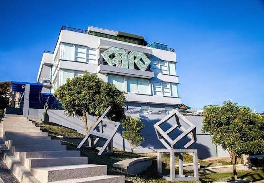
Museo Orlina
Museo Orlina is a contemporary art museum in Tagaytay known for its impressive glass
sculptures and works by Filipino artist Ramon Orlina. It is a great place to experience
Filipino art and culture.
Interactive map of Museo Orlina
TYPE: Art Museum
LOCATION:
Hollywood Subdivision,
Brgy. Tolentino East,
Tagaytay City, Cavite
STATUS: Open to Public

Benguet, Philippines
BAGUIO
CITY
Baguio City is known as the Summer Capital of the Philippines because of its cool climate and high elevation. It is famous for its pine trees, mountain views, colorful gardens, and popular attractions such as Burnham Park, Session Road, and Mines View Park. The city is also known for its local culture, fresh produce, and relaxing atmosphere.
YOUR NEXT
DESTINATION
Burnham Park
The Burnham Park is a historic urban park located in the heart of Baguio City,
Benguet, Philippines. It was designed by American architect and city planner Daniel Burnham as
part of the original plan for the city.
The park is one of the most popular recreational areas in Baguio. It features a man-made
lake where visitors can enjoy boating, as well as gardens, walking paths,
playgrounds, and open spaces for different activities.
Burnham Park is also a popular meeting place for locals and tourists. Its central location
makes it a convenient starting point for exploring other attractions around Baguio City.

Burnham Park
Burnham Park is known for its relaxing atmosphere, man-made lake, gardens, and recreational activities. It is one of the most recognizable public spaces in Baguio City.
Interactive map of Burnham Park
TYPE: Urban Park
LOCATION: Jose Abad Santos Drive,
Baguio City, Benguet,
Philippines
COORDINATES: Burnham Park,
Baguio
STATUS: Open to Public
Mines View Park
The Mines View Park is a popular scenic viewpoint located in Baguio City, Benguet,
Philippines. It is situated on the northeastern side of the city and offers views
of the surrounding mountains and the former mining areas of Itogon.
The park is known for its observation deck, where visitors can enjoy panoramic views of the
Cordillera mountains. It is also surrounded by shops selling souvenirs, local products,
and traditional handicrafts.
Mines View Park is one of Baguio's well-known tourist destinations because
of its scenic landscape and cool mountain atmosphere.
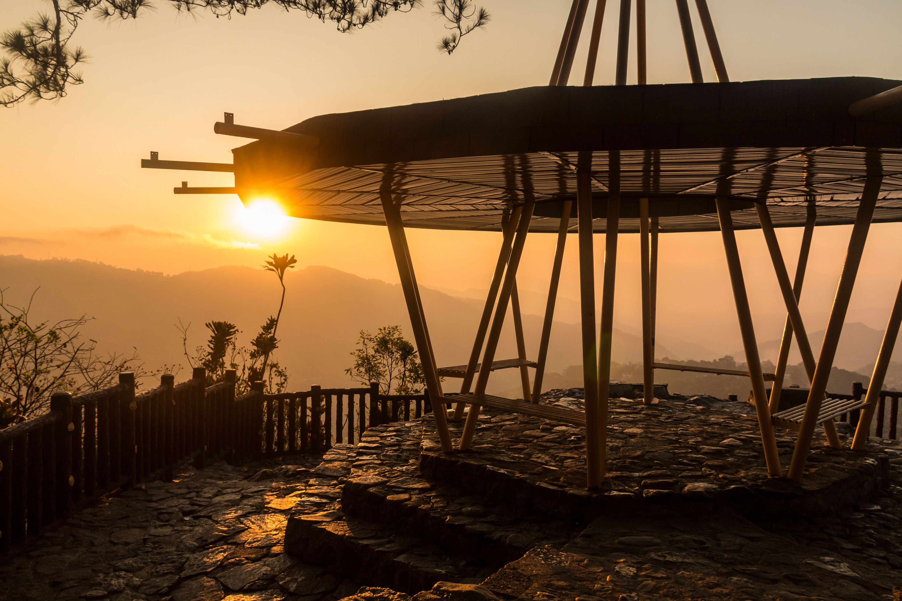
Mines View Park
Mines View Park offers visitors a beautiful view of the mountains and valleys surrounding Baguio. It is also a popular place for souvenirs and local products.
Interactive map of Mines View Park
TYPE: Scenic Viewpoint and Urban Park
LOCATION: Mines View, Baguio City,
Benguet, Philippines
STATUS: Open to Public
Baguio Botanical Garden
The Baguio Botanical Garden, also known as the Igorot Village, is a popular
garden and cultural destination located in Baguio City, Benguet, Philippines.
The garden features different types of plants, flowers, trees, and walking paths. It also
contains traditional Cordilleran houses and cultural displays that introduce visitors to the
heritage of the region.
The peaceful surroundings and natural scenery make the Botanical Garden a popular place for
visitors who want to relax while experiencing the culture and environment of the Cordillera region.
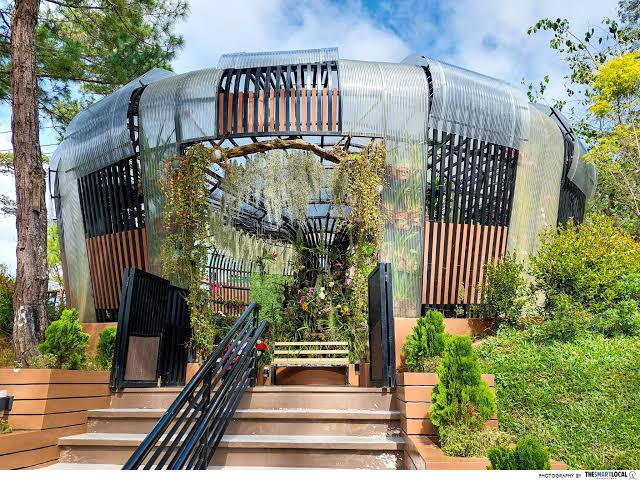
Baguio Botanical Garden
The Botanical Garden combines nature and Cordilleran culture through its gardens, plants, traditional structures, and peaceful surroundings.
Interactive map of Baguio Botanical Garden
TYPE: Botanical Garden and Cultural Park
LOCATION: Leonard Wood Road,
Baguio City, Benguet,
Philippines
STATUS: Open to Public
Wright Park
The Wright Park is a popular recreational park located in Baguio City, Benguet, Philippines.
It is situated near The Mansion and is known for its long rectangular
pool surrounded by pine trees.
The park is especially known for horseback riding, which has become one of its popular
activities for tourists. Visitors can also enjoy the cool weather, pine-covered surroundings, and
scenic views.
Wright Park is a common stop for visitors exploring the eastern part of Baguio and is
located close to other attractions such as The Mansion and Baguio Botanical Garden.
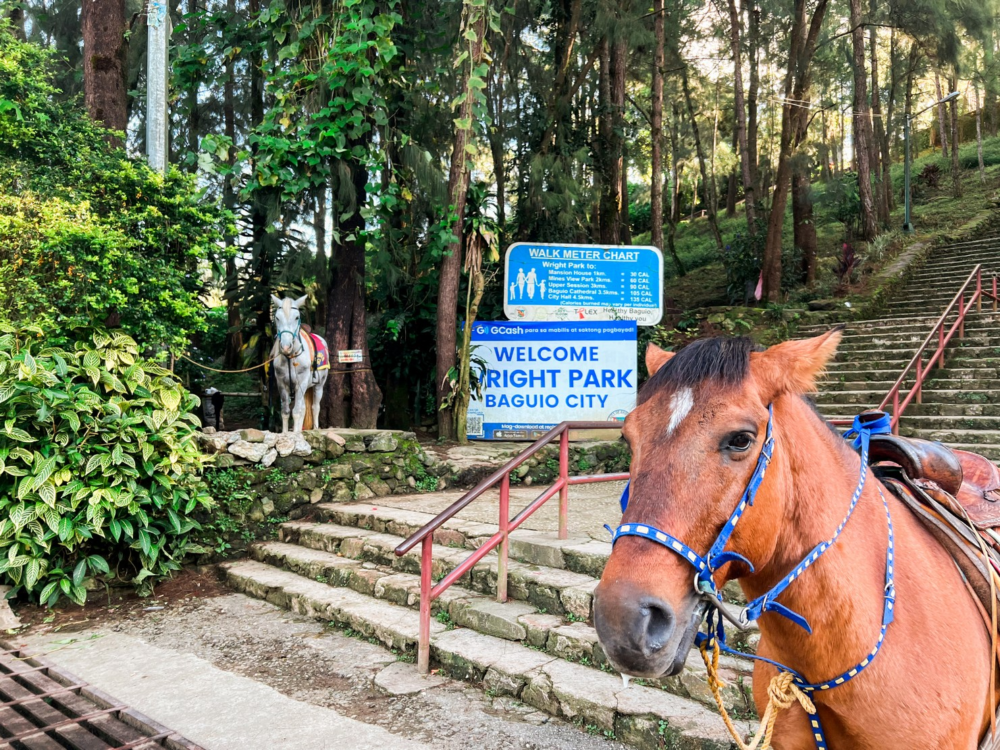
Wright Park
Wright Park is known for its pine trees, scenic surroundings, and horseback riding activities, making it a popular recreational spot in Baguio.
Interactive map of Wright Park
TYPE: Recreational Park
LOCATION: Wright Park, Baguio City,
Benguet, Philippines
STATUS: Open to Public
Camp John Hay
Camp John Hay is a former United States military installation located in Baguio City, Benguet,
Philippines. Today, it is a popular recreational and tourism area surrounded by pine trees and mountain scenery.
The area features walking trails, restaurants, hotels, recreational facilities, and
historical sites. Its cool climate and pine-covered surroundings make it a popular
destination for visitors.
Camp John Hay also preserves several reminders of its historical past
while providing modern facilities for tourists and local visitors.
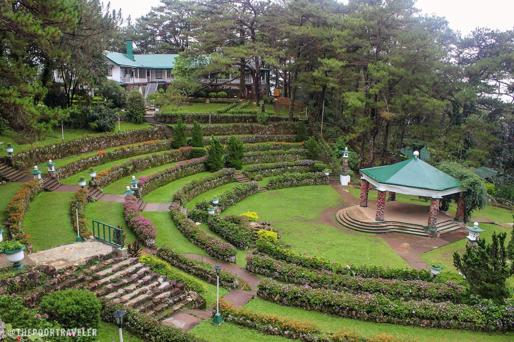
Camp John Hay
Camp John Hay combines Baguio's natural scenery with history and recreation, offering visitors pine forests, walking trails, and different leisure activities.
Interactive map of Camp John Hay
TYPE: Historical and Recreational Area
LOCATION: Camp John Hay, Baguio City,
Benguet, Philippines
STATUS: Open to Public
Tam-Awan Village
Tam-awan Village is a cultural and art village located in Baguio City,
Benguet, Philippines. It was established to showcase Cordilleran culture, traditional architecture,
and local art.
The village features traditional Cordilleran houses, art exhibits, galleries, and
spaces where visitors can experience local cultural traditions. It also serves as a venue for
artists and cultural activities.
Tam-awan Village provides visitors with an opportunity to learn more about Cordilleran
heritage while enjoying the artistic and natural surroundings of Baguio.
Tam-Awan Village
Tam-awan Village showcases Cordilleran culture through traditional houses, local artwork, cultural activities, and scenic surroundings.
Interactive map of Tam-Awan Village
TYPE: Cultural and Art Village
LOCATION: Long Long Road, Pinsao Proper, Baguio City,
Benguet, Philippines
STATUS: Open to Public

Aklan, Philippines
BORACAY
ISLAND
Boracay is a small island in the central Philippines. It's known for its resorts and beaches. Along the west coast, White Beach is backed by palm trees, bars and restaurants. On the east coast, strong winds make Bulabog Beach a hub for water sports. Nearby, the observation deck on Mount Luho offers panoramic views over the island. Offshore, coral reefs and shipwrecks are home to diverse marine life.
YOUR NEXT
DESTINATION
Ariel's Point
Ariel's Point is a popular outdoor destination near Boracay, Aklan, Philippines.
It is known for its beautiful coastal scenery, clear waters, and cliff-jumping
activities.
The destination features natural rock formations and platforms overlooking the sea. Visitors can enjoy
activities such as swimming, snorkeling, kayaking, and cliff jumping depending on the available
conditions and activities.
Ariel's Point is commonly visited as a day-trip destination from Boracay and offers visitors an opportunity
to experience the natural beauty of the surrounding waters and
coastline.
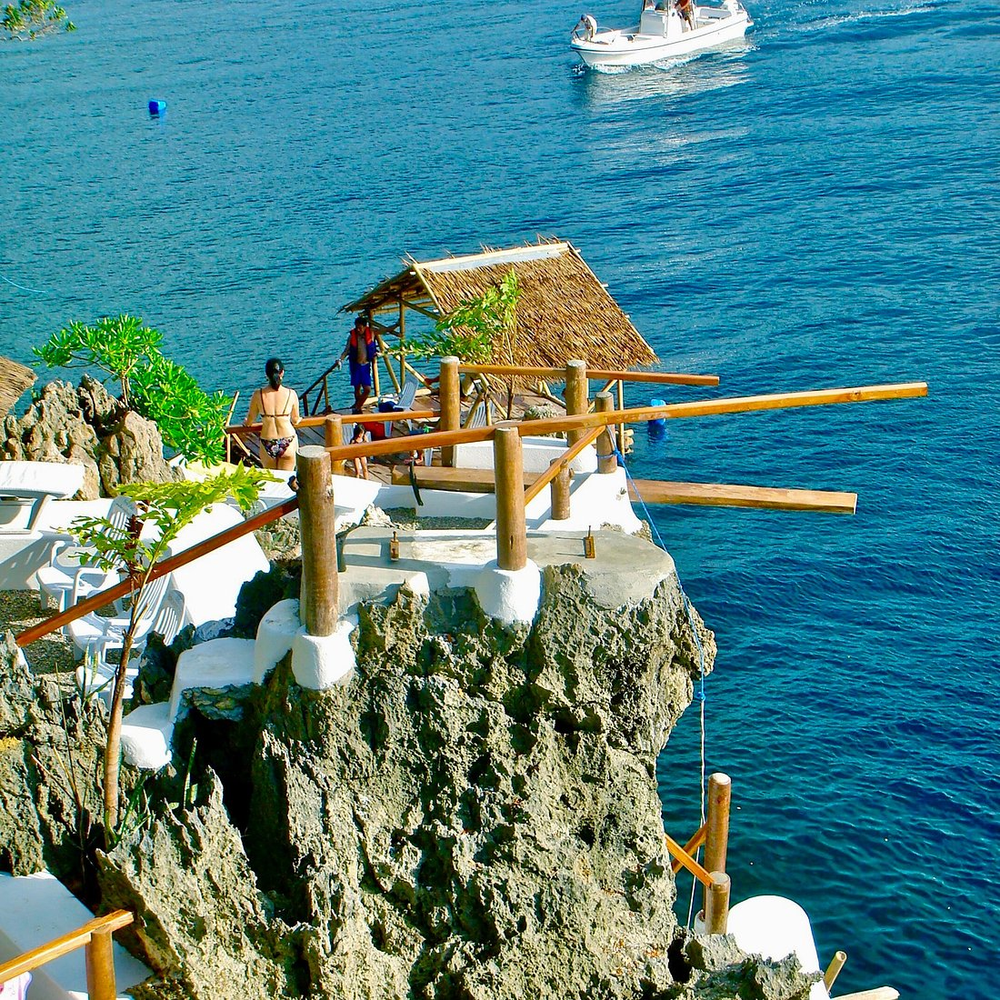
Ariel's Point
Ariel's Point is known for its scenic coastline, clear waters, and outdoor activities, offering visitors a different way to enjoy the natural beauty of Aklan.
Interactive map of Ariel's Point
TYPE: Urban Park
LOCATION: Boracay, Aklan, Philippines
STATUS: Open to Public
Jawili Falls
Jawili Falls is a natural attraction located in Tangalan, Aklan, Philippines.
It is known for its series of waterfalls surrounded by lush greenery and natural rock formations.
The waterfalls form several natural pools where visitors can enjoy the peaceful surroundings. The area provides a
refreshing environment away from the busy tourist areas of Boracay.
Jawili Falls is one of Aklan's nature destinations and is visited by people who want to
experience the province's waterfalls, greenery, and natural scenery.
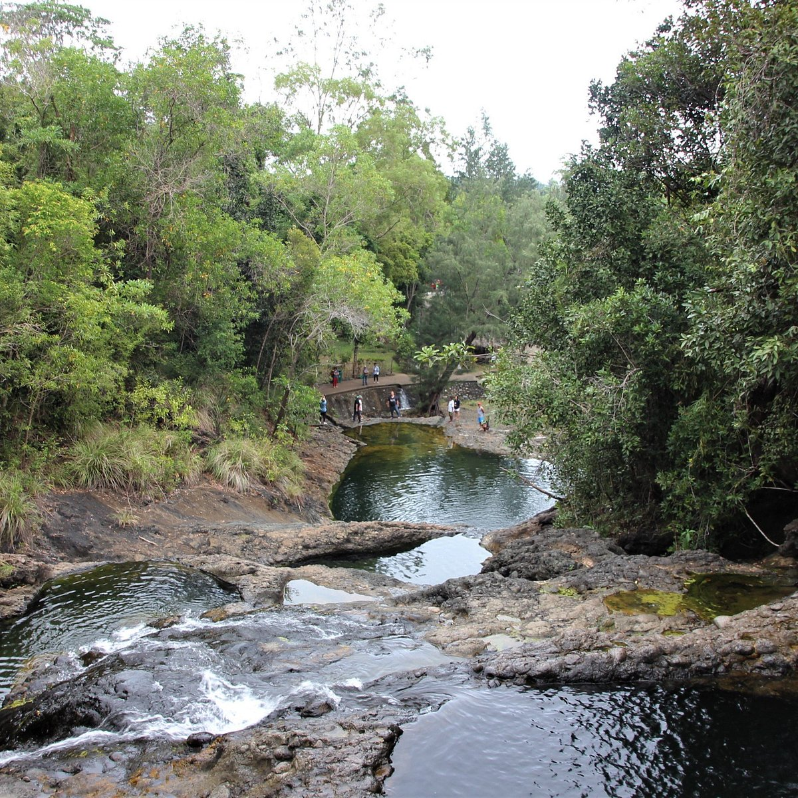
Jawili Falls
Jawili Falls is surrounded by greenery and natural rock formations, offering visitors a peaceful place to enjoy the natural scenery of Aklan.
Interactive map of Jawili Falls
TYPE: Waterfall and Natural Attraction
LOCATION: Jawili, Tangalan, Aklan,
Philippines
STATUS: Open to Public
Boracay Island
The Boracay Island is a famous tropical destination in Aklan, Philippines. It is
known for its white sand beaches, clear blue waters, beautiful sunsets, and relaxing
island atmosphere.
The island's most famous beach is White Beach, which stretches along the western side of Boracay. The area is
divided into different stations and is surrounded by hotels, restaurants, shops, and other
tourist establishments.
Boracay also offers different activities such as swimming, island hopping, snorkeling, diving, and other water
activities. Its natural scenery and beaches make it one of the most visited tourist
destinations in the Philippines.
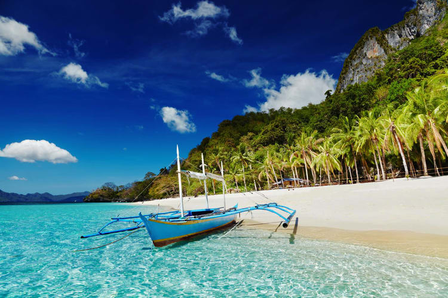
Boracay Island
Boracay is known for its white sand beaches, clear waters, beautiful sunsets, and tropical scenery, making it a popular destination for visitors looking for a relaxing beach experience.
Interactive map of Boracay Island
TYPE: Beach and Island Destination
LOCATION: Boracay Island, Malay, Aklan,
Philippines
COORDINATES: Boracay Island, Aklan
STATUS: Open to Public
Puka Shell Beach
Puka Shell Beach, also known as Puka Beach, is a scenic beach located on the northern part of
Boracay Island, Aklan, Philippines. It is named after the puka shells that can be found along its shoreline.
Compared with the busier areas of Boracay, Puka Beach offers a more peaceful atmosphere. The beach is surrounded
by trees and natural scenery and provides views of the clear waters and coastline.
Visitors can enjoy walking along the shore, taking photographs, swimming, and appreciating the
natural beauty of the area.

Puka Shell Beach/h3>
Puka Beach is known for its natural scenery, peaceful atmosphere, clear waters, and shoreline where puka shells can be found.
Interactive map of Puka Shell Beach
TYPE: Beach
LOCATION: Boracay Island, Malay, Aklan, Philippines
COORDINATES: Puka Beach, Boracay
STATUS: Open to Public

Bohol, Philippines
CHOCOLATE
HILLS
Chocolate Hills and its immediate environs are relatively flat to rolling topography with elevation ranges from 100 m to 500 m above sea level. It has been declared the country's 3rd National Geological Monument on June 18, 1988 in recognition of its scientific value and geomorphic uniqueness.
YOUR NEXT
DESTINATION
Philippine Tarsier Sanctuary
The Philippine Tarsier Sanctuary is a protected wildlife area in Corella,
Bohol, Philippines. It is dedicated to the conservation and protection of the Philippine tarsier, one of the country's
smallest primates.
The sanctuary provides a natural environment where visitors can observe tarsiers while learning
about their behavior, habitat, and conservation. Visitors are guided
through designated areas to help protect the animals.
The sanctuary is an important destination for learning about Philippine wildlife
and the importance of protecting native species.
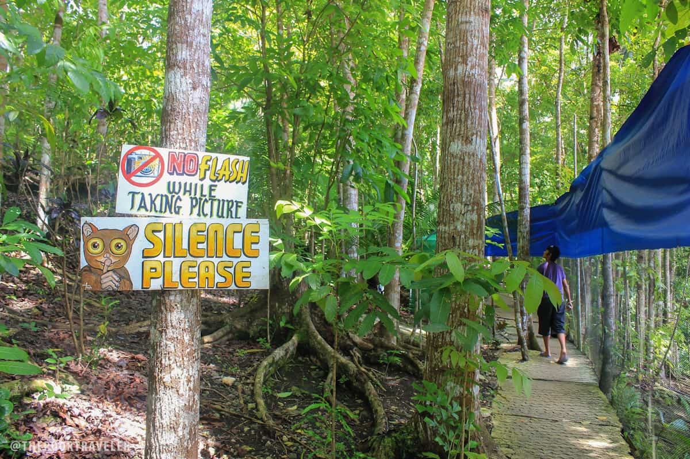
Ariel's Point
The sanctuary allows visitors to learn about and observe the Philippine tarsier while supporting wildlife conservation in Bohol.
Interactive map of Philippine Tarsier Sanctuary
TYPE: Wildlife Sanctuary
LOCATION: Corella, Bohol, Philippines
COORDINATES: Philippine Tarsier Sanctuary
STATUS: Open to Public
Loboc River
The Loboc River is a famous river located in Loboc, Bohol, Philippines.
It is known for its calm waters, lush tropical vegetation, and scenic surroundings.
One of the popular ways to experience the river is through a river cruise, where visitors can enjoy the
natural scenery while traveling along the water. The area is also surrounded by local communities and
tropical forests.
Loboc River is an important tourism destination in Bohol because of its
natural beauty and relaxing river environment.

Loboc River
Loboc River is known for its peaceful waters, tropical greenery, and scenic river cruises that allow visitors to experience the natural beauty of Bohol.
Interactive map of Loboc River
TYPE: River and Natural Attraction
LOCATION: Loboc, Bohol,
Philippines
COORDINATES: Loboc River, Bohol
STATUS: Open to Public
Panglao Island
Panglao Island is a popular tourist destination in Bohol, Philippines.
It is known for its beautiful beaches, clear waters, coral reefs, and marine life.
The island is home to several beach destinations and is a popular location for swimming, snorkeling, diving,
island hopping, and other water activities. Its coastal scenery also attracts visitors looking for a
relaxing tropical experience.
Panglao is one of the major tourism areas in Bohol and provides visitors with a combination
of beaches, marine activities, restaurants, and resorts.
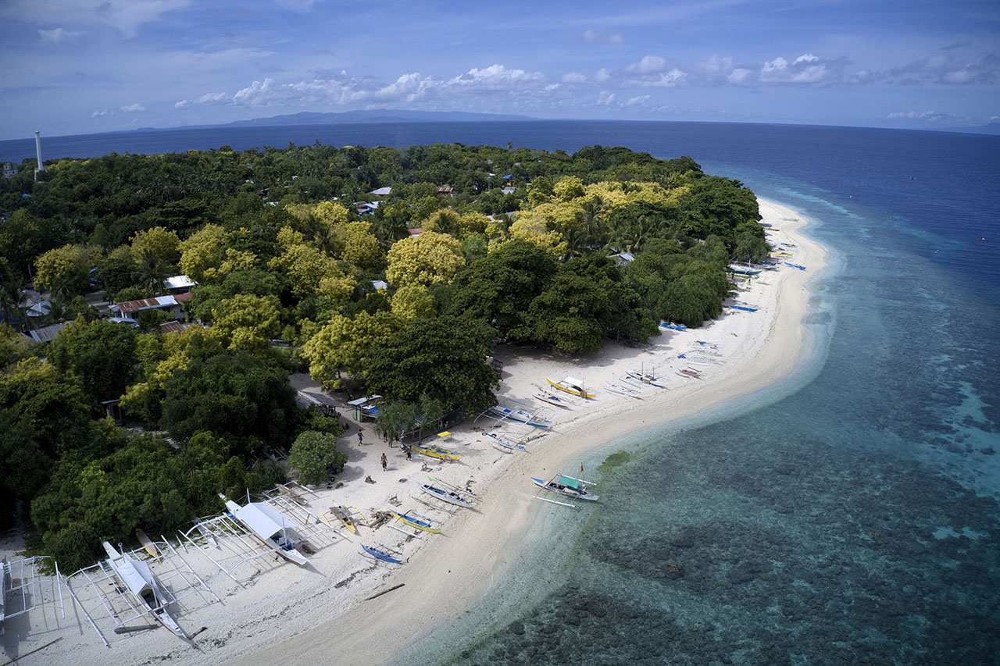
Panglao Island
Panglao Island is known for its beaches, clear waters, coral reefs, and marine activities, making it one of Bohol's popular destinations.
Interactive map of Panglao Island
TYPE: Island and Beach Destination
LOCATION: Panglao, Bohol, Philippines
COORDINATES: Panglao Island, Bohol
STATUS: Open to Public
Hinagdanan Cav
The Hinagdanan Cave is a natural limestone cave located in Dauis, Bohol, Philippines.
The cave is known for its large chamber, limestone formations, and underground pool.
Natural openings in the cave allow sunlight to enter, creating an interesting view of the rock formations
and water below. Visitors can explore the cave and
appreciate its natural geological features.
Hinagdanan Cave is one of the well-known natural attractions in Bohol and is often included
in tours around Panglao and nearby areas.
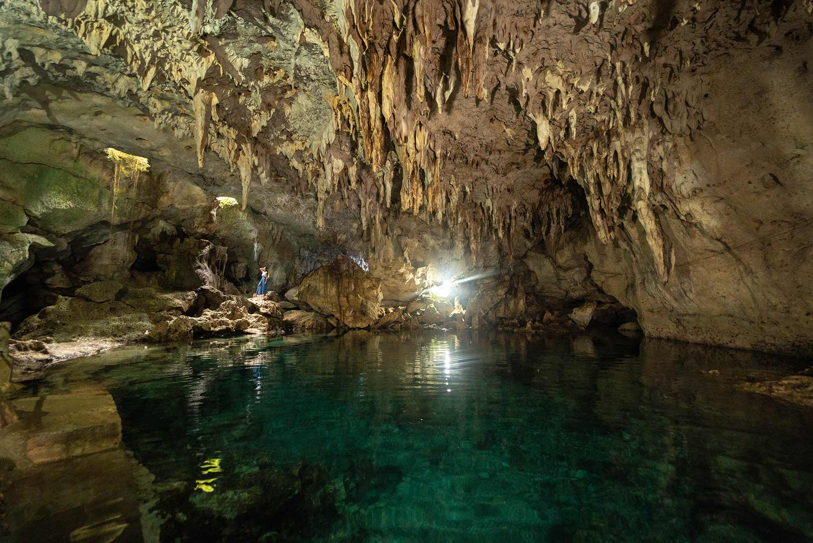
Hinagdanan Cav
Hinagdanan Cave is known for its limestone formations, underground pool, and natural opening that allows sunlight to enter the cave.
Interactive map of Hinagdanan Cave
TYPE: Limestone Cave and Natural
Attraction
LOCATION: Dauis, Bohol,
Philippines
COORDINATES: Hinagdanan Cave, Bohol
STATUS: Open to Public